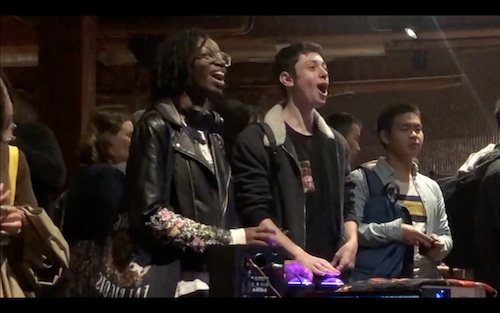
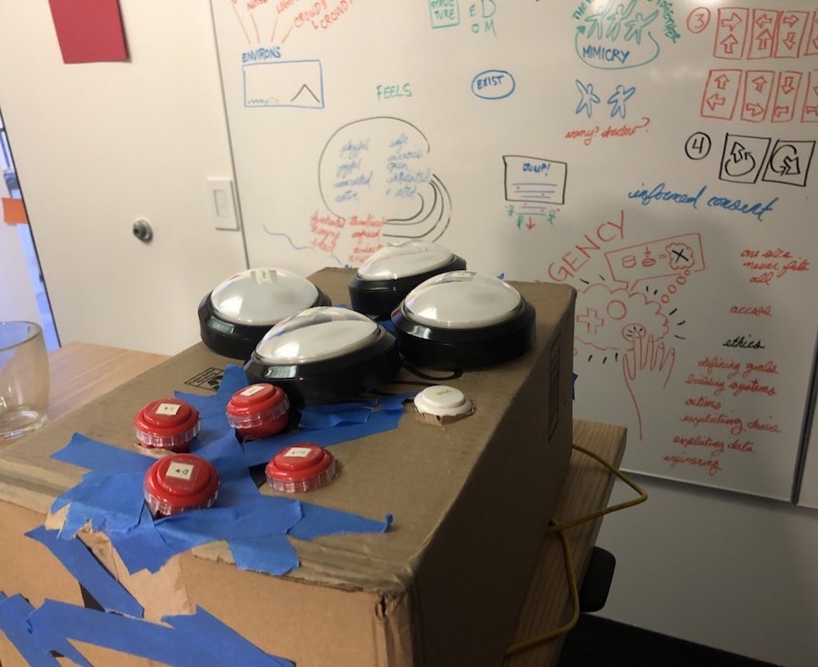

Follow
A two-player cooperative game
Is there intimacy in opposition? How do we move together when we lead and follow?
I made Follow for The No Quarter Exhibition during my residency at the NYU Game Center.
Follow is a two player cooperative game, with a custom controller. Follow explores the space of leading/following, the intimacy of opposition, and the delicate balance of shared control.

How Follow Works
- There are two players and two enormous LED buttons. Each player controls one button.
- On the screen, there are circles (representing players) surrounded by rings (representing energy)
- When the left player presses their button, both players are pulled left, and the left player starts losing rings/energy to the right player.
- When the right player presses their button, both players are pulled right, and the right player starts losing rings/energy to the left player.
- Movement never stops - unless both players hold their buttons simultaneously, which freezes them in place.
- There are some falling mini-spikes that "pop" rings if they hit a player and falling rings that players can catch.
- When either player runs out of rings the game ends for both.
Concept
Follow is an exploration of:
- Following and leading
- The intimacy of opposition
- The nature of connection, shared control, and shared fates

Photo by EMi
Follow continues a thread that came out of my earlier games: Closer, a game where the single playable controller is cooperatively and continuously shared between two players and Common, where the entire game emerges from the stewardship and maintenance of the relationships of the players.
Questions
- What is the relationship between the one who is leading and the one who is following?
- Is there mimicry or mirroring in opposition?
- What intimacy is there in opposition?
- What does it mean to share control equally with another person?
Design needs:
- Players feel connected and have oppositional symmetry
- Maps to keyboard for screen component & for better accessibility
- Each player can see or feel the direction of the other player

Early ideas for alternative controllers:
Shared LED ropes or pulleys
- Rainbow LEDs inside clear tubing?
- Players pull to steer (we should go this way, we should go that way)
- Design challenge - can we retain some independence for each player? So they aren’t only being pulled around
- Technical challenge - which sensors?

4 large shared LED buttons + central switch for player control
- Either player can switch directions after hitting the central toggle button
- Button lights change to communicate if it is p1 or p2
- Making something that feels great and calls to people
2 large joysticks and LED strips
- 2 Joysticks (or control buttons) are placed in a giant cross of LED strips, which light up according to the direction and “follow” status
- Should the controllers connect somehow?
Spinning Disks
- Use swivel chair plates and 6 (3 foot) wooden circles (found in the game center) to build two large spinny controllers that players sit on top of and spin to turn on screen characters.
- Design challenge: players seeing the screen while spinning
- Will players feel connected to each other?
- Technical challenges: which sensors? & where to mount sensors/power without spinning cables?
Alternate Game Structures
I designed (and even coded) several alternate prototypes. I'd love to explore these further someday. I'm also curious about making a rope controller option.

Tools:
I used p5.js for the game visuals, Arduino and p5.serialControl for the custom controller, and vanilla Javascript for the game.
Process:
Follow was conceptualized, designed, and built in 8 weeks. For more context on my residency in general, read NYU 1 - Day One: Why am I here?, NYU 2 - Two weeks: bugs, feelings, and art?, and NYU 3 - Mission complete: Closing thoughts
Follow - Early cardboard box prototype
Community and Collaborators
Special thanks to: Arnab Chakravarty for controller collaboration (extensive support with fabrication and Arduino code), Aaron Levin for code mentorship, Ida Toft, Ellen Flanagan, Kay Dyson Tam, The Game Center, Steph Lawrence Clark(!!!), Naomi Clark, Winnie Song, Charles Pratt, Mailis Rodrigues, Sukanya Aneja, Jessica, Eric Zimmerman, Danny Hawk, The Coding Rainbow, Jackie, Mitu Khandaker, Brent, Catt Small, Matt Parker, Bennett Foddy, Holly, Toni Pizza, Frank Lantz, Peiling, Nun, Atharva, Matt Boch, Robert Yang, Clara Fernández-Vara, Tara, Prabhakar Ragde, Robin Baumgarten, Alina Constantin, Vincent Lostanlen, We Throw Switches, ITP, Dylan McKenzie,Elizabeth, Jane Friedhoff, Noah.
Thanks to the NYU Game Center and the No Quarter Commission for making this possible.